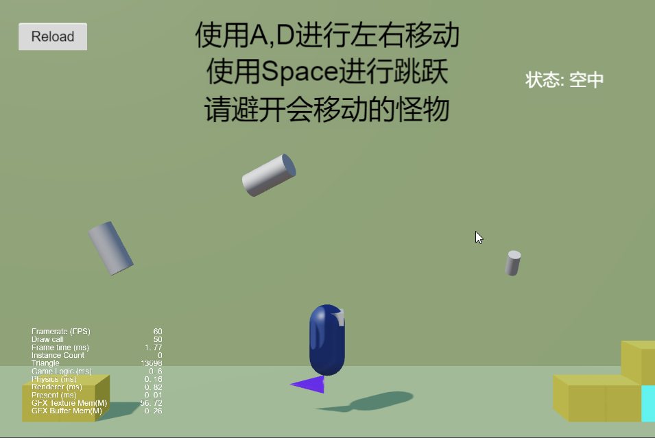
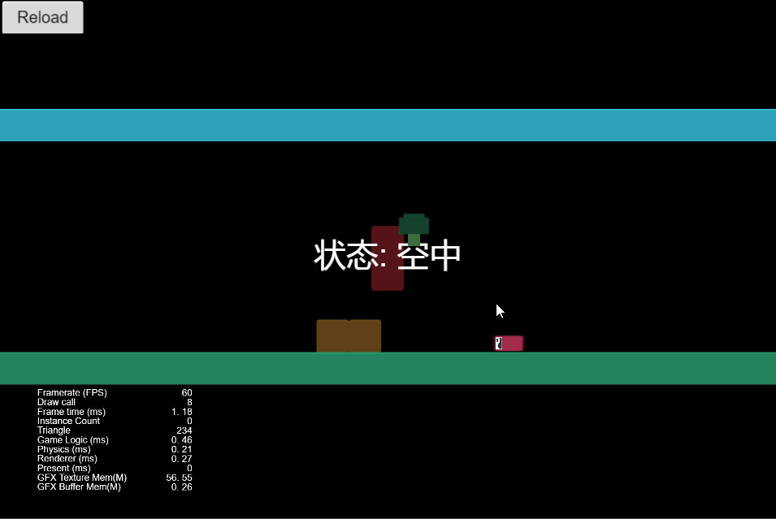
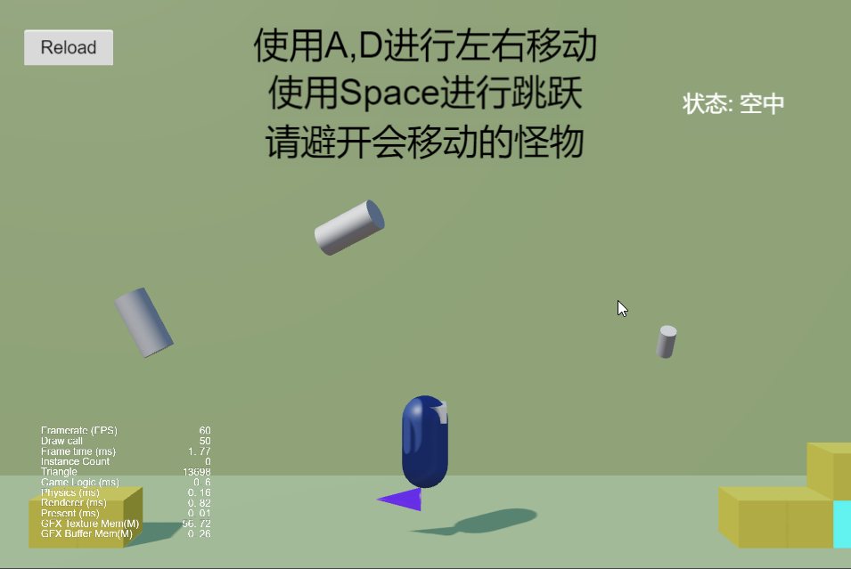
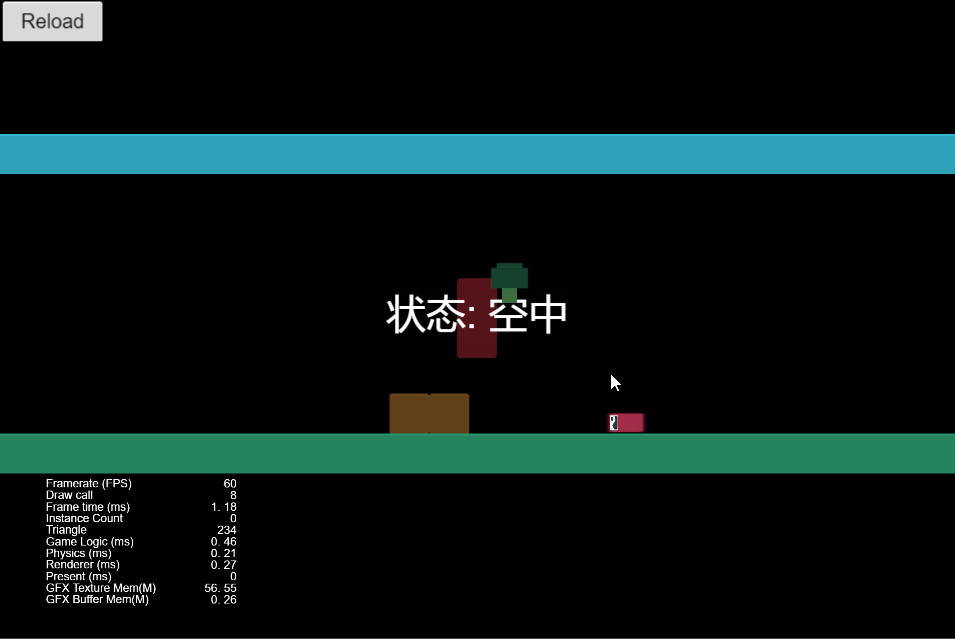

CocosMario
使用CocosCreator制作的类马里奥的平台跳跃小游戏,包含3D场景和2D场景;
- 项目地址:
https://github.com/YathenStianbase/CocosMario-like https://yathenstianbase.github.io/projects/minigame/cocosmario/
运行截图:


–>


使用CocosCreator制作的类马里奥的平台跳跃小游戏,包含3D场景和2D场景;
https://github.com/YathenStianbase/CocosMario-like https://yathenstianbase.github.io/projects/minigame/cocosmario/
运行截图:


–>